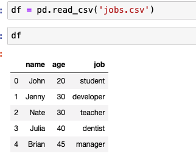

Pandas 이론 강좌
pandas
판다스 강의를 기반으로 판다스 사용법을 적는다.
https://www.inflearn.com/course/pandas-팬더스-데이터분석-기초#
https://github.com/minsuk-heo/pandas
개발 환경
- Jupyter Notebook을 사용해서 학습
- https://brunch.co.kr/@mapthecity/16 를 보고 설치
- 터미널에서 폴더로 이동해 jupyter notebook을 치면 브라우저가 열림
-
원래 Atom을 사용했지만, 여기 강의에서 이걸 사용해서 그대로 설치 후 사용
# pandas가 설치되어있는지 체크 **!conda list | grep pandas
pandas 0.25.1 py37h0a44026_0
# pandas를 pd라는 이름으로 추가 import pandas as pd**
jobs.csv 파일을 pd의 read_csv 메소드로 읽는 코드

만약, 데이터가 너무 많다면 head 메소드를 사용하면 5개의 데이터만 읽어 온다.
만약, 쉼표가 아니라 탭으로 데이터를 구분하는 파일의 경우 아래와 같이 사용해서 읽는다.

지금까지 읽은 파일은 항상 첫번째 행은 리스트의 해더였다. 하지만 해더가 없는 경우에는 어떻게 읽어야 하는가?
header = None 을 추가해주면 된다.

해더를 추가하고 싶다면?
colemns = ['name', 'age','job'] 으로 해더 추가

읽으면서 해더를 한번에 추가하고 싶다면?
파라미터로 names = ['name', 'age','job'] 를 추가한다.
데이터 프레임 만들기
- Dic에서 만들기
friend_dict_list = [ {'name':'Jone', 'age': 25, 'job': 'student'}, {'name':'Jenny', 'age': 35, 'job': 'teacher'} ] df = pd.DataFrame(friend_dict_list) df.head()
- 순서가 있는 Dic에서 만들기 (OrderedDict)
from collections import OrderedDict # 키의 순서를 보장 friend_ordered_dict_list = OrderedDict( [ ('name', ['Jone', 'Nate']), ('age', [25,35]), ('job', ['student','teacher']) ] ) df = pd.DataFrame.from_dict(friend_ordered_dict_list)
데이터 프레임을 파일에 저장하기
df.to_csv('friends.csv', index= True, header=True)
frends.csv 파일에 저장됨.
index 를 false로 주면 rowId가 생략됨
header를 false로 주면 header 없이 생성됨
만약, 비어있는 값이 있다면 (None) 그냥 빈칸으로 표시된다. 하지만 - 같이 특정 문자를 넣어 주고 싶다면? na_rep 키워드를 사용해주면 된다.
df.to_csv('friends.csv', index= True, header=True, na_rep='-')
이렇게 처리하면 None 데이터는 - 로 표시한다.
인덱스를 통해서 일부만 읽어오기

특정 인덱스의 데이터만 읽어오기
0과 2 번 인덱스의 데이터만 가져온다.

by column condition
특정 조건으로 뽑아내기
- 25세 이상인 것만 뽑기

- 쿼리 명령어도 가능

- 복잡한 쿼리도 가능

Filter Column
- Index
앞부분은 row를 나타내고 뒷부분은 컬럼을 나타낸다. row에 조건이 없으니까 전체 행에서 앞에 1부터 2까지의 퀄럼만 뽑아낸 것이다.

- 퀄럼의 이름을 사용해서 필터링
name과 age만 꺼냄

filter 함수도 사용 가능
df.filter(items=['age', 'job'])

like도 사용 가능
퀄럼 이름에 a가 들어가는 퀄럼 꺼내기’

정규식을 사용가능
b$ → b로 끝나는 컬럼

삭제하고 싶다면?
drop 메소드 사용
- index를 사용해 삭제

- 특정 조건만 삭제


- 특정 퀄럼 통으로 삭제

새로운 열 삽입

데이터 수정
- 학생이 아니면 연봉을 입력할 것이다.

열의 값을 다 더하기
학생의 데이터 정보가 있다고 할 때
friend_dict_list2 = [
{'name':'Jone', 'midterm':15, 'final': 30},
{'name':'Nate', 'midterm':95, 'final': 80},
{'name':'Ury', 'midterm':75, 'final': 60},
{'name':'Jullia', 'midterm':30, 'final': 15},
{'name':'Brian', 'midterm':88, 'final': 85},
{'name':'Jake', 'midterm':100, 'final': 98},
{'name':'Jenny', 'midterm':77, 'final': 68}
]
df = pd.DataFrame.from_dict(friend_dict_list2)

중간고사와 기말고사 값을 다 더한 total이라는 데이터를 만들고 싶을 경우

평균을 추가하고 싶다면?

등급을 매기고 싶다면?
로직이 필요하기 때문에grades 배열을 만들어서 퀄럼에 추가한다.
grades = []
for row in df['average']:
if row >= 90:
grades.append('A')
elif row >= 80:
grades.append('B')
elif row >= 70:
grades.append('C')
else:
grades.append('F')

이제 grade를 보고 F가 아니면 Pass로 바꿔보자

apply 는 함수를 받는 고차 함수로 각 row마다 함수를 적용하도록 한다.
특정 날짜가 있을 때

여기서 연도만 빼고 싶다면 어떻게 할까?

행을 추가하려면?
새로운 데이터 프레임이 있을 때

기존에 있는 데이터에 추가한다.
ignore_index=True 는 인덱스를 무시하고 새로 할당한다. False를 주면 Ben도 0을 할당 받는다.

groupBy
student_list = [{'name': 'John', 'major': "Computer Science", 'sex': "male"},
{'name': 'Nate', 'major': "Computer Science", 'sex': "male"},
{'name': 'Abraham', 'major': "Physics", 'sex': "male"},
{'name': 'Brian', 'major': "Psychology", 'sex': "male"},
{'name': 'Janny', 'major': "Economics", 'sex': "female"},
{'name': 'Yuna', 'major': "Economics", 'sex': "female"},
{'name': 'Jeniffer', 'major': "Computer Science", 'sex': "female"},
{'name': 'Edward', 'major': "Computer Science", 'sex': "male"},
{'name': 'Zara', 'major': "Psychology", 'sex': "female"},
{'name': 'Wendy', 'major': "Economics", 'sex': "female"},
{'name': 'Sera', 'major': "Psychology", 'sex': "female"}
]
df = pd.DataFrame(student_list, columns = ['name', 'major', 'sex'])
df

일단 학과 별로 묶어보자

출력하면 다음과 같다.

학과당 인원

성별당 인원

중복행 제거
학생 데이터가 있다.
student_list = [{'name': 'John', 'major': "Computer Science", 'sex': "male"},
{'name': 'Nate', 'major': "Computer Science", 'sex': "male"},
{'name': 'Abraham', 'major': "Physics", 'sex': "male"},
{'name': 'Brian', 'major': "Psychology", 'sex': "male"},
{'name': 'Janny', 'major': "Economics", 'sex': "female"},
{'name': 'Yuna', 'major': "Economics", 'sex': "female"},
{'name': 'Jeniffer', 'major': "Computer Science", 'sex': "female"},
{'name': 'Edward', 'major': "Computer Science", 'sex': "male"},
{'name': 'Zara', 'major': "Psychology", 'sex': "female"},
{'name': 'Wendy', 'major': "Economics", 'sex': "female"},
{'name': 'Sera', 'major': "Psychology", 'sex': "female"},
{'name': 'John', 'major': "Computer Science", 'sex': "male"},
]
df = pd.DataFrame(student_list, columns = ['name', 'major', 'sex'])
df

여기 보면 0번째와 11번째가 같은 것을 확인 할 수 있다.
눈으로 말고 코드로 확인하고 싶다면?

11 번째 값은 이미 있는 데이터 (중복)
중복된 값을 제거하려면?

중복에 조건 넣기
major가 같은 것 체크


keep에서 first 혹은 last를 줄 수 있다.
NaN값을 찾아서 다른 값으로 변경하기
student_list = [{'name': 'John', 'major': "Computer Science", 'sex': "male"},
{'name': 'Nate', 'major': "Computer Science", 'sex': "male"},
{'name': 'Abraham', 'major': "Physics", 'sex': "male"},
{'name': 'Brian', 'major': "Psychology", 'sex': "male"},
{'name': 'Janny', 'major': "Economics", 'sex': "female"},
{'name': 'Yuna', 'major': "Economics", 'sex': "female"},
{'name': 'Jeniffer', 'major': "Computer Science", 'sex': "female"},
{'name': 'Edward', 'major': "Computer Science", 'sex': "male"},
{'name': 'Zara', 'major': "Psychology", 'sex': "female"},
{'name': 'Wendy', 'major': "Economics", 'sex': "female"},
{'name': 'Nate', 'major': None, 'sex': "male"},
{'name': 'John', 'major': "Computer Science", 'sex': None},
]
df = pd.DataFrame(student_list, columns = ['name', 'major', 'sex'])
값 중에서 None이 있는 값을 추가해서 테스트 한다.
쉽게 전체 데이터를 확인하려면?

12개의 행과 3개의 열이 있고 major와 sex에서 non-null이 11개씩만 존재한다.
isna() 혹은 isnull() 로 빈 곳을 쉽게 찾는다.


이제 None 값을 다른 값으로 변경해보자
fillna 를 사용해서 None 값을 기본값으로 변경할 수 있다.

map
date_list = [
{
'yyyy-mm-dd': '2000-06-27'
},
{
'yyyy-mm-dd': '2000-10-27'
}
]
df = pd.DataFrame(date_list, columns=['yyyy-mm-dd'])
def extract_year(row):
return row.split('-')[0]
df['year'] = df['yyyy-mm-dd'].map(extract_year)

map 함수도 예전에 apply 함수를 사용했던 것과 동일하게 동작함
만약 다음과 같은 데이터가 있을 때

student는 1 developer는 2 teacher는 3 dentist는 4 manager는 5로 바꾸게 하고 싶다면?

하나가 없다면?

applymap
x_y = [{'x': 5.5, 'y': -5.6},
{'x': -5.2, 'y': 5.5},
{'x': -1.6, 'y': -4.5}]
df = pd.DataFrame(x_y)
df

이런 데이터가 있는데 만약 전체를 다 바꾸고 싶다면?
df = df.applymap(np.around)
df

전체를 바꾸고 싶다면 applymap 하나만 바꾸고 싶다면 map
Unique 한 값 추출
job_list = [{'name': 'John', 'job': "teacher"},
{'name': 'Nate', 'job': "teacher"},
{'name': 'Fred', 'job': "teacher"},
{'name': 'Abraham', 'job': "student"},
{'name': 'Brian', 'job': "student"},
{'name': 'Janny', 'job': "developer"},
{'name': 'Nate', 'job': "teacher"},
{'name': 'Obrian', 'job': "dentist"},
{'name': 'Yuna', 'job': "teacher"},
{'name': 'Rob', 'job': "lawyer"},
{'name': 'Brian', 'job': "student"},
{'name': 'Matt', 'job': "student"},
{'name': 'Wendy', 'job': "banker"},
{'name': 'Edward', 'job': "teacher"},
{'name': 'Ian', 'job': "teacher"},
{'name': 'Chris', 'job': "banker"},
{'name': 'Philip', 'job': "lawyer"},
{'name': 'Janny', 'job': "basketball player"},
{'name': 'Gwen', 'job': "teacher"},
{'name': 'Jessy', 'job': "student"}
]
df = pd.DataFrame(job_list, columns = ['name', 'job'])

유일한 값만 확인하고 싶다면?


두개의 데이터 프레임 합치기
l1 = [{'name': 'John', 'job': "teacher"},
{'name': 'Nate', 'job': "student"},
{'name': 'Fred', 'job': "developer"}]
l2 = [{'name': 'Ed', 'job': "dentist"},
{'name': 'Jack', 'job': "farmer"},
{'name': 'Ted', 'job': "designer"}]
df1 = pd.DataFrame(l1, columns = ['name', 'job'])
df2 = pd.DataFrame(l2, columns = ['name', 'job'])
df1

df2

concat을 사용해서 합치고 인덱스가 겹치니까 무시하도록 한다.

열로 합치고 싶을 경우에는?